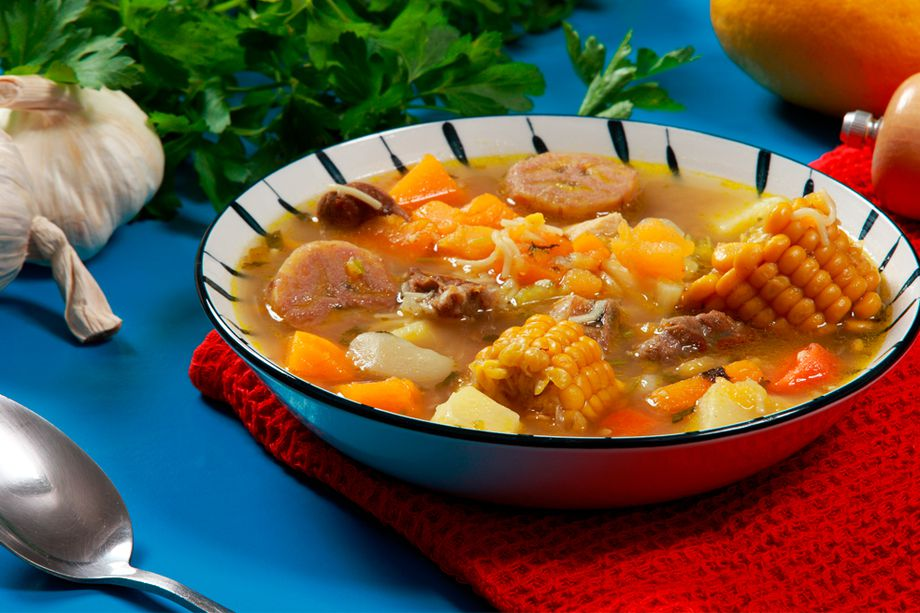

Sancocho

Description
The best soup you could ever eat in the whole world, full of flavor and great seasoning
Ingredients
- Poultry:Bone-in skinless chicken thighs, you can also use a whole cut up chicken, bone-in breasts or drumsticks.
- veggies: Scallions, tomatoes, potatoes, frozen or fresh peeled yuca, corn, green plantain, garlic.
- Seasonings: Cumin, chicken bouillon cubes, salt, fresh cilantro.
Steps to prapare the greatest Sancocho ever
- Peel and cut the yuca, yautia, green plantain and yellow plantain into 1-inch pieces. Scrape out the seeds, then chop the calabaza,
skin on, into 1-inch pieces. Put each ingredient in a separate bowl, adding water to cover vegetables in order to prevent them from
turning brown while you prepare the rest of the soup.
- Husk the corn, then slice it into 2-inch-thick segments. Set aside.
- Season pork (or beef) and chicken with 1/2 tablespoon salt and 1/4 teaspoon black pepper.
- Heat 1 tablespoon oil in a large pot over medium-high. Add the pork and brown on all sides for 5 minutes. Using a slotted spoon, transfer
to a clean, large bowl, then add the chicken to the same pot, and brown on both sides for another 5 minutes, adding oil as needed if the pot gets dry.
Transfer with a slotted spoon to the same bowl as the pork.
- Reduce heat to medium and add sofrito to the pot, scraping up any browned bits of meat and incorporating them into the mix. Cook for 5 to 7 minutes,
until liquid has evaporated and mixture darkens in color.
- Return the pork, chicken and any accumulated juices to the pot. Add the stock, bay leaves and remaining 1 tablespoon salt, and bring to a boil over
high heat. Once simmering, reduce heat to medium-low and cook uncovered for 15 minutes, stirring occasionally.
- To keep the vegetables from falling apart, add each one in order of firmness, cooking each for 5 minutes before adding the next. Begin with the yuca,
then yautia, green plantain, yellow plantain, calabaza and corn, cooking the yuca for a total of 30 minutes and the corn for only 5 minutes.
- Add chorizo and stir well to incorporate. Cook for another 10 to 15 minutes over medium-low heat until meat and vegetables are tender and break easily
with a fork. Because of all the starches and meat in this dish, this stew tends to be thick and rich. Some of the vegetables will fall apart, giving it
a porridge consistency. This is a good thing.
- Adjust salt to taste, and serve with fresh bread or white rice on the side.
Home Page